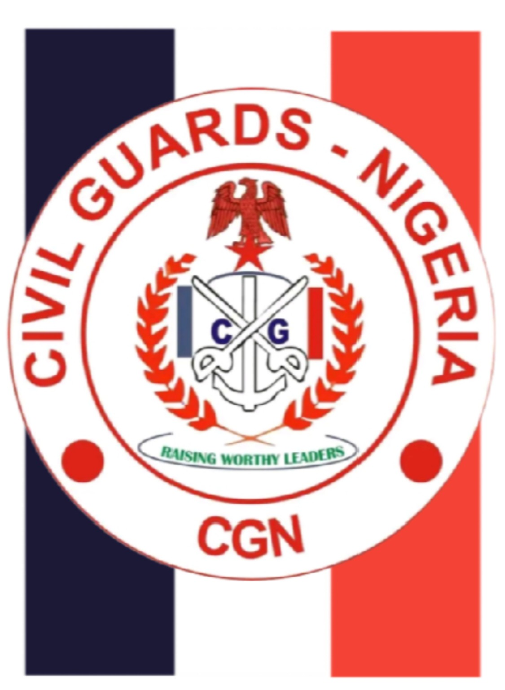

Vision
To develop responsible leaders grounded in discipline, integrity, patriotism and humanitarian service, who contribute to peace, justice and sustainable national development.
ANCHOR HUMANITARIAN AND LEADERSHIP DEVELOPMENT INITIATIVE
Leadership development, humanitarian service, civic engagement, volunteerism and community empowerment.
Registered organization: Anchor Humanitarian and Leadership Development Initiative (AH-LDI)
Public identity: Civil Guards Nigeria

WHO WE ARE
Anchor Humanitarian and Leadership Development Initiative (AH-LDI) is the registered organization. Civil Guards Nigeria is its public and operational identity.
AH-LDI is a voluntary, humanitarian, non-political and community-focused initiative committed to leadership development, discipline, mentorship, civic responsibility, volunteer service and community empowerment.
OUR DIRECTION
To develop responsible leaders grounded in discipline, integrity, patriotism and humanitarian service, who contribute to peace, justice and sustainable national development.
To identify, train, mentor and empower people through leadership development, civic education, volunteer service, humanitarian intervention, community engagement and strategic partnerships.
LEADERSHIP
The detailed current office holders can be maintained from the Admin Dashboard.
ORGANIZATION
Detailed hierarchy and appointments are governed by the approved constitution and official appointments.
SERVICE
JOIN US
Membership offers opportunities for leadership development, structured training, volunteer service and community engagement.
LEARN • TRAIN • LEAD
LATEST
CALENDAR
OUR ACTIVITIES
RESOURCES
GET IN TOUCH
For official enquiries, membership, partnerships and programmes, contact National Headquarters.